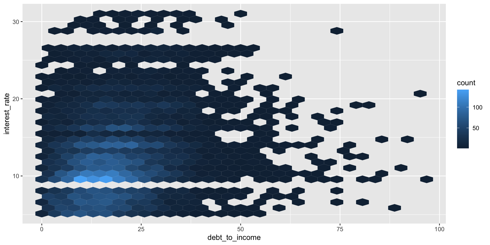

# A tibble: 87 × 14
name height mass hair_color skin_color eye_color birth_year sex gender
<chr> <int> <dbl> <chr> <chr> <chr> <dbl> <chr> <chr>
1 Luke Sk… 172 77 blond fair blue 19 male mascu…
2 C-3PO 167 75 <NA> gold yellow 112 none mascu…
3 R2-D2 96 32 <NA> white, bl… red 33 none mascu…
4 Darth V… 202 136 none white yellow 41.9 male mascu…
5 Leia Or… 150 49 brown light brown 19 fema… femin…
6 Owen La… 178 120 brown, gr… light blue 52 male mascu…
7 Beru Wh… 165 75 brown light blue 47 fema… femin…
8 R5-D4 97 32 <NA> white, red red NA none mascu…
9 Biggs D… 183 84 black light brown 24 male mascu…
10 Obi-Wan… 182 77 auburn, w… fair blue-gray 57 male mascu…
# … with 77 more rows, and 5 more variables: homeworld <chr>, species <chr>,
# films <list>, vehicles <list>, starships <list>Biological Stats 2: Lecture 3
Dr. Gavin Fay
01/24/2023
Data exploration, checking
Acknowledgements: Mine Çetinkaya-Rundel, Amanda Hart, Sara Stoudt
Chapter 4. Data Exploration
- What’s in a data set?
- Summarizing & visualizing data
- Outliers, transformations, standardizations
- Final thoughts
What is in a dataset?
Dataset terminology
- Each row is an observation
- Each column is a variable
Luke Skywalker

What’s in the Star Wars data?
Take a glimpse at the data:
Rows: 87
Columns: 14
$ name <chr> "Luke Skywalker", "C-3PO", "R2-D2", "Darth Vader", "Leia Or…
$ height <int> 172, 167, 96, 202, 150, 178, 165, 97, 183, 182, 188, 180, 2…
$ mass <dbl> 77.0, 75.0, 32.0, 136.0, 49.0, 120.0, 75.0, 32.0, 84.0, 77.…
$ hair_color <chr> "blond", NA, NA, "none", "brown", "brown, grey", "brown", N…
$ skin_color <chr> "fair", "gold", "white, blue", "white", "light", "light", "…
$ eye_color <chr> "blue", "yellow", "red", "yellow", "brown", "blue", "blue",…
$ birth_year <dbl> 19.0, 112.0, 33.0, 41.9, 19.0, 52.0, 47.0, NA, 24.0, 57.0, …
$ sex <chr> "male", "none", "none", "male", "female", "male", "female",…
$ gender <chr> "masculine", "masculine", "masculine", "masculine", "femini…
$ homeworld <chr> "Tatooine", "Tatooine", "Naboo", "Tatooine", "Alderaan", "T…
$ species <chr> "Human", "Droid", "Droid", "Human", "Human", "Human", "Huma…
$ films <list> <"The Empire Strikes Back", "Revenge of the Sith", "Return…
$ vehicles <list> <"Snowspeeder", "Imperial Speeder Bike">, <>, <>, <>, "Imp…
$ starships <list> <"X-wing", "Imperial shuttle">, <>, <>, "TIE Advanced x1",…How many rows and columns does this dataset have? {.question}
Exploratory data analysis
What is EDA?
- Exploratory data analysis (EDA) is an approach to analysing data sets to summarize its main characteristics
- Often, this is visual – this is what we’ll focus on first
- But we might also calculate summary statistics and perform data wrangling/manipulation/transformation at (or before) this stage of the analysis
Mass vs. height
How would you describe the relationship between mass and height of Starwars characters? What other variables would help us understand data points that don’t follow the overall trend? Who is the not so tall but chonky character?

Jabba!
quartz_off_screen
2 Basic questions
Where are the data centered?
How are they spread? Are they symmetric, skewed, multimodal?
Are there outliers?
How are the data distributed?
Are there relationships among variables? Are relationships linear? Which analyses should be applied?
Are transformations needed?
Was the sampling effort approximately the same for each observation or variable?
Expecting >20% of your research time (often more) exploring your data makes analysis easier and more efficient.
Always plot your data!
Visualizing your data is key to performing statistical analyses.
‘Standard’ summaries of data may not reveal patterns.
You will often create two types of figures:
Those that help you
Those that help your audience.
Extra Credit:
The ‘datasaurus’ is lurking somewhere in this course. Find it and email Gavin with its location and identifying analysis.
Data visualization
“The simple graph has brought more information to the data analyst’s mind than any other device.” — John Tukey
- Data visualization is the creation and study of the visual representation of data
- Many tools for visualizing data – R is one of them
- Many approaches/systems within R for making data visualizations – ggplot2 is one of them, and that’s what we’re going to use.
Why do we visualize?
Anscombe’s quartet
set x y
1 I 10 8.04
2 I 8 6.95
3 I 13 7.58
4 I 9 8.81
5 I 11 8.33
6 I 14 9.96
7 I 6 7.24
8 I 4 4.26
9 I 12 10.84
10 I 7 4.82
11 I 5 5.68
12 II 10 9.14
13 II 8 8.14
14 II 13 8.74
15 II 9 8.77
16 II 11 9.26
17 II 14 8.10
18 II 6 6.13
19 II 4 3.10
20 II 12 9.13
21 II 7 7.26
22 II 5 4.74 set x y
23 III 10 7.46
24 III 8 6.77
25 III 13 12.74
26 III 9 7.11
27 III 11 7.81
28 III 14 8.84
29 III 6 6.08
30 III 4 5.39
31 III 12 8.15
32 III 7 6.42
33 III 5 5.73
34 IV 8 6.58
35 IV 8 5.76
36 IV 8 7.71
37 IV 8 8.84
38 IV 8 8.47
39 IV 8 7.04
40 IV 8 5.25
41 IV 19 12.50
42 IV 8 5.56
43 IV 8 7.91
44 IV 8 6.89Summarising Anscombe’s quartet
quartet %>%
group_by(set) %>%
summarise(
mean_x = mean(x),
mean_y = mean(y),
sd_x = sd(x),
sd_y = sd(y),
r = cor(x, y)
)# A tibble: 4 × 6
set mean_x mean_y sd_x sd_y r
<fct> <dbl> <dbl> <dbl> <dbl> <dbl>
1 I 9 7.50 3.32 2.03 0.816
2 II 9 7.50 3.32 2.03 0.816
3 III 9 7.5 3.32 2.03 0.816
4 IV 9 7.50 3.32 2.03 0.817Visualizing Anscombe’s quartet
Data: Palmer Penguins
Measurements for penguin species, on islands in Palmer Archipelago, size (flipper length, body mass, bill dimensions), and sex. Horst et al. 2022. R Journal

Rows: 344
Columns: 8
$ species <fct> Adelie, Adelie, Adelie, Adelie, Adelie, Adelie, Adel…
$ island <fct> Torgersen, Torgersen, Torgersen, Torgersen, Torgerse…
$ bill_length_mm <dbl> 39.1, 39.5, 40.3, NA, 36.7, 39.3, 38.9, 39.2, 34.1, …
$ bill_depth_mm <dbl> 18.7, 17.4, 18.0, NA, 19.3, 20.6, 17.8, 19.6, 18.1, …
$ flipper_length_mm <int> 181, 186, 195, NA, 193, 190, 181, 195, 193, 190, 186…
$ body_mass_g <int> 3750, 3800, 3250, NA, 3450, 3650, 3625, 4675, 3475, …
$ sex <fct> male, female, female, NA, female, male, female, male…
$ year <int> 2007, 2007, 2007, 2007, 2007, 2007, 2007, 2007, 2007…Faceting (small multiples)
- Smaller plots that display different subsets of the data
- Useful for exploring conditional relationships and large data
Various ways to facet
How you facet and organize plots can strengthen (& weaken) the storytelling.
Think about the comparisons you are trying to make or message your plot is intending to convey and choose visualizations that help understanding.
Likely you will want to try different views, particularly when exploring the data initially.
Facet and color
Number of variables involved
- Univariate data analysis - distribution of single variable
- Bivariate data analysis - relationship between two variables
- Multivariate data analysis - relationship between many variables at once, often focusing on the relationship between two while conditioning for others
Types of variables
- Numerical variables can be classified as continuous or discrete based on whether or not the variable can take on an infinite number of values or only non-negative whole numbers, respectively.
- If the variable is categorical, we can determine if it is ordinal based on whether or not the levels have a natural ordering.
Group exercise
With your group’s plot, discuss and answer the following questions:
- What type of graph is it?
- What is being plotted?
- How would you describe the distribution or trend of the data?
- What question is the plot trying to answer?
- Do you think the plot is successful in answering that question? Why or why not?
Data: Lending Club
Thousands of loans made through the Lending Club, which is a platform that allows individuals to lend to other individuals
Not all loans are created equal – ease of getting a loan depends on (apparent) ability to pay back the loan
Data includes loans made, these are not loan applications

Take a peek at data
Rows: 10,000
Columns: 55
$ emp_title <chr> "global config engineer ", "warehouse…
$ emp_length <dbl> 3, 10, 3, 1, 10, NA, 10, 10, 10, 3, 1…
$ state <fct> NJ, HI, WI, PA, CA, KY, MI, AZ, NV, I…
$ homeownership <fct> MORTGAGE, RENT, RENT, RENT, RENT, OWN…
$ annual_income <dbl> 90000, 40000, 40000, 30000, 35000, 34…
$ verified_income <fct> Verified, Not Verified, Source Verifi…
$ debt_to_income <dbl> 18.01, 5.04, 21.15, 10.16, 57.96, 6.4…
$ annual_income_joint <dbl> NA, NA, NA, NA, 57000, NA, 155000, NA…
$ verification_income_joint <fct> , , , , Verified, , Not Verified, , ,…
$ debt_to_income_joint <dbl> NA, NA, NA, NA, 37.66, NA, 13.12, NA,…
$ delinq_2y <int> 0, 0, 0, 0, 0, 1, 0, 1, 1, 0, 0, 0, 0…
$ months_since_last_delinq <int> 38, NA, 28, NA, NA, 3, NA, 19, 18, NA…
$ earliest_credit_line <dbl> 2001, 1996, 2006, 2007, 2008, 1990, 2…
$ inquiries_last_12m <int> 6, 1, 4, 0, 7, 6, 1, 1, 3, 0, 4, 4, 8…
$ total_credit_lines <int> 28, 30, 31, 4, 22, 32, 12, 30, 35, 9,…
$ open_credit_lines <int> 10, 14, 10, 4, 16, 12, 10, 15, 21, 6,…
$ total_credit_limit <int> 70795, 28800, 24193, 25400, 69839, 42…
$ total_credit_utilized <int> 38767, 4321, 16000, 4997, 52722, 3898…
$ num_collections_last_12m <int> 0, 0, 0, 0, 0, 0, 0, 0, 0, 0, 0, 0, 0…
$ num_historical_failed_to_pay <int> 0, 1, 0, 1, 0, 0, 0, 0, 0, 0, 1, 0, 0…
$ months_since_90d_late <int> 38, NA, 28, NA, NA, 60, NA, 71, 18, N…
$ current_accounts_delinq <int> 0, 0, 0, 0, 0, 0, 0, 0, 0, 0, 0, 0, 0…
$ total_collection_amount_ever <int> 1250, 0, 432, 0, 0, 0, 0, 0, 0, 0, 0,…
$ current_installment_accounts <int> 2, 0, 1, 1, 1, 0, 2, 2, 6, 1, 2, 1, 2…
$ accounts_opened_24m <int> 5, 11, 13, 1, 6, 2, 1, 4, 10, 5, 6, 7…
$ months_since_last_credit_inquiry <int> 5, 8, 7, 15, 4, 5, 9, 7, 4, 17, 3, 4,…
$ num_satisfactory_accounts <int> 10, 14, 10, 4, 16, 12, 10, 15, 21, 6,…
$ num_accounts_120d_past_due <int> 0, 0, 0, 0, 0, 0, 0, NA, 0, 0, 0, 0, …
$ num_accounts_30d_past_due <int> 0, 0, 0, 0, 0, 0, 0, 0, 0, 0, 0, 0, 0…
$ num_active_debit_accounts <int> 2, 3, 3, 2, 10, 1, 3, 5, 11, 3, 2, 2,…
$ total_debit_limit <int> 11100, 16500, 4300, 19400, 32700, 272…
$ num_total_cc_accounts <int> 14, 24, 14, 3, 20, 27, 8, 16, 19, 7, …
$ num_open_cc_accounts <int> 8, 14, 8, 3, 15, 12, 7, 12, 14, 5, 8,…
$ num_cc_carrying_balance <int> 6, 4, 6, 2, 13, 5, 6, 10, 14, 3, 5, 3…
$ num_mort_accounts <int> 1, 0, 0, 0, 0, 3, 2, 7, 2, 0, 2, 3, 3…
$ account_never_delinq_percent <dbl> 92.9, 100.0, 93.5, 100.0, 100.0, 78.1…
$ tax_liens <int> 0, 0, 0, 1, 0, 0, 0, 0, 0, 0, 0, 0, 0…
$ public_record_bankrupt <int> 0, 1, 0, 0, 0, 0, 0, 0, 0, 0, 1, 0, 0…
$ loan_purpose <fct> moving, debt_consolidation, other, de…
$ application_type <fct> individual, individual, individual, i…
$ loan_amount <int> 28000, 5000, 2000, 21600, 23000, 5000…
$ term <dbl> 60, 36, 36, 36, 36, 36, 60, 60, 36, 3…
$ interest_rate <dbl> 14.07, 12.61, 17.09, 6.72, 14.07, 6.7…
$ installment <dbl> 652.53, 167.54, 71.40, 664.19, 786.87…
$ grade <ord> C, C, D, A, C, A, C, B, C, A, C, B, C…
$ sub_grade <fct> C3, C1, D1, A3, C3, A3, C2, B5, C2, A…
$ issue_month <fct> Mar-2018, Feb-2018, Feb-2018, Jan-201…
$ loan_status <fct> Current, Current, Current, Current, C…
$ initial_listing_status <fct> whole, whole, fractional, whole, whol…
$ disbursement_method <fct> Cash, Cash, Cash, Cash, Cash, Cash, C…
$ balance <dbl> 27015.86, 4651.37, 1824.63, 18853.26,…
$ paid_total <dbl> 1999.330, 499.120, 281.800, 3312.890,…
$ paid_principal <dbl> 984.14, 348.63, 175.37, 2746.74, 1569…
$ paid_interest <dbl> 1015.19, 150.49, 106.43, 566.15, 754.…
$ paid_late_fees <dbl> 0, 0, 0, 0, 0, 0, 0, 0, 0, 0, 0, 0, 0…Variable types
| variable | type |
|---|---|
loan_amount |
numerical, continuous |
interest_rate |
numerical, continuous |
term |
numerical, discrete |
grade |
categorical, ordinal |
state |
categorical, not ordinal |
annual_income |
numerical, continuous |
homeownership |
categorical, not ordinal |
debt_to_income |
numerical, continuous |
Visualizing numerical data
Describing shapes of numerical distributions
- shape:
- skewness: right-skewed, left-skewed, symmetric (skew is to the side of the longer tail)
- modality: unimodal, bimodal, multimodal, uniform
- center: mean (
mean), median (median), mode (not always useful) - spread: range (
range), standard deviation (sd), inter-quartile range (IQR) - unusual observations
Histogram
Histograms and binwidth
binwidth = 1000
Histograms and binwidth
binwidth = 5000
Histograms and binwidth
binwidth = 20000
Customizing histograms
Fill with a categorical variable
Facet with a categorical variable
Box plot
Box plot and outliers
Adding a categorical variable
Relationships between numerical variables
Scatterplot
Hex plot
Contour plot
Visualising categorical data
Bar plot
Segmented bar plot
Segmented bar plot
Which bar plot is a more useful representation for visualizing the relationship between homeownership and grade?


Customizing bar plots

Customizing bar plots


Customizing bar plots
Relationships between numerical and categorical variables
Already talked about…
- Colouring and faceting histograms and density plots
- Side-by-side box plots
Violin plots
Ridge plots
Raincloud plots
library(ggdist)
library(gghalves)
ggplot(penguins, aes(species, bill_length_mm)) +
ggdist::stat_halfeye(adjust = .5, width = .3, .width = 0, justification = -.3, point_colour = NA) +
geom_boxplot(width = .1, outlier.shape = NA) +
gghalves::geom_half_point(side = "l", range_scale = .4, alpha = .5) +
coord_flip()QQ-plots
Determines if data conform to a theoretical distribution.

Pair plots
- Scatterplot for each pair of variables.
- Measures of correlation
Über Pair plot
Visualizing spatial data
Maps are extremely useful (and intuitive) ways of exploring spatial relationships among variables in our data.

 (
(Transformation
- Outliers, non-normality, heteroscedasticity and nonlinearity are the most common reasons for transformation.
- Removing outliers is an option (with sensitivity analysis)
- All response and explanatory variables can be transformed differently.
- Choice of transformation depends on analytical design:
- GLS, GLM, GAM Poisson can handle outliers
- GAM and iterative least squares can handle nonlinearity
Nonlinearity
- If scatterplot indicates nonlinear patterns, consider transforming one or both variables.
- Many possible transformations, with lots of guidance on how to proceed with these.
- GF advice: Consider the theoretical basis for transformations and think about appropriate methods before trying to ‘force’ linearity to apply cookbooks.
Standardizations
- If variables for comparison are on different scales, conversion to a common scale may be an option.
- Some analyses (e.g., correlation, PCA) are self- standardized.
Centering (standard ‘location’):
Scaling1 (standard ‘spread’):
Standardizations
Standardizations
Standardizations
Exploring relationships
‘Even if you don’t see it, it might still be there.’
Plot your data as many ways as you can, particularly with respect to other variables in the dataset.
This may change your understanding of patterns in the data
Simpson’s paradox
Simpson’s paradox illustrates the effect that omission of an explanatory variable can have on the measure of association between another explanatory variable and a response variable
The inclusion of a third variable in the analysis can change the apparent relationship between the other two variables
Simpson’s paradox
Simpson’s paradox
Simpson’s paradox
Simpson’s paradox
Summary
Take a peep at your data!
Plot the data, then plot it a different way, and again…
Reasons for data transformation:
Reduce effect of outliers
Improve linearity between variables
Make error structure closer to normal
Stabilize relationship between mean and variance
Summary
General approach:
Apply all explorations to raw data
If explanatory data have outliers, then transform
Apply analytical technique and explore residuals
If residuals have outliers, heterogeneity or patterns, then transform
Choose the best transformation by trial & error, automatic selection or rules of thumb (e.g., sqrt for counts, arcsin for proportions, log for multiplicative relationships)
Supplemental Reading
Introduction to Modern Statistics Chap 4-6
Communicating with Data, Chap 3-4